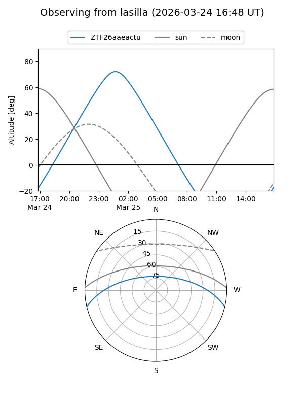
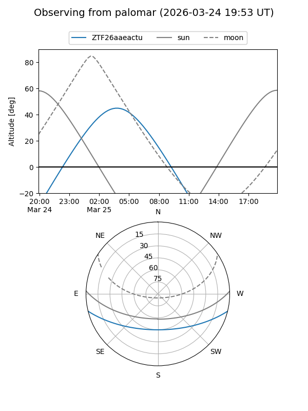

ZTF26aaeactu
Target ZTF26aaeactu at 2026-03-25 05:52
Aliases and brokers:
FINK: link
Lasair: link
ALeRCE: link
alt names
ZTF26aaeactu (ztf,fink_ztf)
Coordinates:
equatorial (ra, dec) = 122.0532,-11.55096
equatorial (HMS+DMS) = 08:08:12.76,-11:33:03.45
galactic (l, b) = (232.2901,+11.26594)
Flags:
Photometry:
last ztfg=19.29
1 ztfg detections
Lightcurve
Visibility


Additional plots